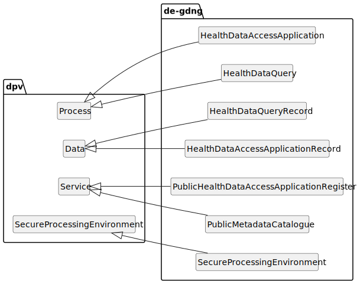
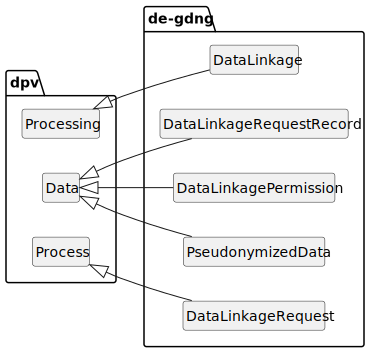

Contributors: (ordered alphabetically) Christian Draeger(University of Leipzig),
Christian Henke(University Medical Center Göttingen),
Julian Flake(University of Koblenz),
Matthias Löbe(University of Leipzig).
NOTE: The affiliations are informative, do not represent formal endorsements, and may be outdated as this list is generated automatically from existing data.
The DE-GDNG extension extends the [[[DPV]]] to represent concepts in the German Law "Gesetz zur Nutzung von Gesundheitsdaten zu gemeinwohlorientierten Forschungszwecken und zur datenbasierten Weiterentwicklung des Gesundheitswesens (Gesundheitsdatennutzungsgesetz – [[GDNG]])".
NOTE: This is a draft vocabulary, which is being updated. The DPVCG welcomes feedback, participation and contributions for this work.
DPV Specifications: The [[DPV]] is the core specification that is extended by specific extensions. A [[PRIMER]] introduces the concepts and modelling of DPV specifications, and [[GUIDES]] describe application of DPV for specific applications and use-cases. The Search Index page provides a searchable hierarchy of all concepts. The Data Privacy Vocabularies and Controls Community Group (DPVCG) develops and manages these specifications through GitHub. For meetings, see the DPVCG calendar.
Contributing: The DPVCG welcomes participation to improve the DPV and associated resources, including expansion or refinement of concepts, requesting information and applications, and addressing open issues. See contributing guide for further information.
Translations
The GDNG vocabulary is defined in English and German. That means: Each term (identifier) contains English words only, but for each term there exist a German label and a German definition. All explanatory texts and diagrams are available in English only.
To switch the language, select the language to show:
Overview
The GDNG extension defines the concepts and properties to describe entities, processes, and data that are involved in processes regulated by the German Gesundheitsdatennutzungsgesetz [[GDNG]] as shown in Figure 1. The Figure 1 also visualizes the relationships of the concepts defined by the GDNG extension with concepts defined by other DPV extensions.
Figure 2 shows a sketch of a possible GDNG aligned collaboration between a [=HealthDataUser=] and the [=DataAccessAndCoordinationOffice=] that describes the process of identification and localization of [=HealthData=] for the purpose of [=SecondaryUse=] of [=HealthData=]. Model elements shown in yellow or green represent terms of this vocabulary.
Example of a collaboration between [=HealthDataUser=] and [=DataAccessAndCoordinationOffice=] to identify and localize [=HealthData=].
Figure 3 shows a possible GDNG aligned collaboration sketching the activities of a [=HealthDataUser=], the [=DataAccessAndCoordinationOffice=] and a [=HealthDataHolder=] that are to be carried out, if a [=HealthDataUser=] (e.g. a research institute) wants to use [=HealthData=] for [=SecondaryUse=] in a [=HealthAndHealthcareResearchProject=]. Model elements shown in yellow or green represent terms of this vocabulary.
Collaboration between [=HealthDataUser=] and [=DataAccessAndCoordinationOffice=] and [=HealthDataHolder=].
Basic Concepts
The basic concepts of the GDNG are described in this section.
Basic terms of this extension.
de-gdng:HealthData: Health data according to GDNG follows the definition of health data of Art. 4 Nr. 15 [[GDPR]], including health data that is also social data according to § 67 of Zehntes Buch Sozialgesetzbuch
go to full definition
de-gdng:PersonalData: Persnal data in GDNG follows the definition of personal data of Art. 4 [[GDPR]]
go to full definition
de-gdng:ResearchProject: A research project in the sense of Art. 9(2)(j) and Art. 89(1), first sentence, and (2) [[GDPR]]
go to full definition
de-gdng:HealthAndHealthcareResearchProject: Research project with the goal to promote health to prevent illnesses, to heal and to reduce their consequences, to improve health care and prevention and to develop healthcare system
go to full definition
de-gdng:SecondaryUse: Processing of health data for purposes other than those for which the data was originally collected
go to full definition
Actors
This section describes the actors involved in GDNG regulated processes.
Relevant actors as defined by this extension.
de-gdng:AuthorizedPerson: A natural person that, according to a rights and rolls concept, proccesses healtcare data at a healthcare facility pursuant to the legal basis of § 6(1) GDNG
go to full definition
de-gdng:DataAccessAndCoordinationOffice: Data Access and Coordination Office for Health Data (DACO), based at the Federal Institute for Drugs and Medical Devices (BfArM)
go to full definition
de-gdng:DataProcessingHealthcareFacility: Institution which process data for the purposes of preventative or occupational medicine, for the assessment of the employee's capacity to work, for medical diagnosis, or for the purposes of care or treatment in the health or social sector under the responsibility of members of a health profession, where such a profession requires state-regulated training for the exercise of the profession or the use of the professional title
go to full definition
de-gdng:HealthDataHolder: Natural or legal person that is authorised or obligated to process health data for research purposes
go to full definition
de-gdng:DataInfrastructure: Networks of health data holders forming data infrastructures
go to full definition
de-gdng:DataPlatform: Networks of health data holders forming data platforms
go to full definition
de-gdng:FederalStateCentresForCancerRegistryData: The federal state centres for cancer registry data pursuant to § 65c des Fünften Buches Sozialgesetzbuch
go to full definition
de-gdng:RegulatedHealthDataHolder: Data holders regulated by law. Examples are the German "Health Data Lab", the "German Centre for Cancer Registry Data" and the "Model Project Genome Sequencing"
go to full definition
de-gdng:GermanCentreForCancerRegistryData: German Centre for Cancer Registry Data pursuant § 1 Bundeskrebsregisterdatengesetz
go to full definition
de-gdng:HealthDataLab: Health Data Lab pursuant to § 303d of Fünftes Buch Sozialgesetzbuch
go to full definition
de-gdng:ModelProjectGenomeSequencingPlatform: Model Project Platform pursuant to § 64e of Fünften Buches Sozialgesetzbuch
go to full definition
de-gdng:ResponsibleDataHoldingAndMediatingBody: Data holding and mediating body responsible for a specific research project
go to full definition
de-gdng:HealthDataUser: Natural or legal person that is requesting or entitled to process health data for research purposes
go to full definition
de-gdng:PublicJointHealthResearchNetwork: Publicly funded networks of data processing healthcare facilitys, including joint research projects and research practice networks, which jointly use and process health data pursuant to § 6(1) GDNG
go to full definition
This section describes concepts around the processes of identification and localization of and access to health data for secondary uses.

Terms of the query and access application processes.
de-gdng:HealthDataAccessApplication: Process of application by data users for access to health data stored at health data holders. The DACO supports data users with this process and coordinates communication
go to full definition
de-gdng:HealthDataAccessApplicationRecord: In course of health data access applications collected and produced data that is also published in the public health data access application register
go to full definition
de-gdng:HealthDataQuery: Process of identification and localization of health data by health data users for their purposes, supported by the DACO
go to full definition
de-gdng:HealthDataQueryRecord: Data that is collected or produced during the identification and localization of health data
go to full definition
de-gdng:PublicHealthDataAccessApplicationRegister: A public registry of information about health data access applications, the corresponding data users, research projects and requested data, maintained by the DACO
go to full definition
de-gdng:PublicMetadataCatalogue: An accessible catalog, driven and maintained by the DACO, in which information about existing and publicly available health data of the german health care along with the respective data holder are collected to fulfill transparency obligations
go to full definition
de-gdng:SecureProcessingEnvironment: A measure for improvement of data protection and information security in context of processing of health data for research purposes and common welfare, drafted by the DACO
go to full definition
Data Linkage
The terms related to data linkage are described in this section.

Terms defined by this extension to describe data linkage.
Terms defined by this extension to describe lawfulness of [=HealthcareDataProcessing=] for [=SecondaryUse=].
de-gdng:Anonymization: Personal data processed under § 6(1) GDNG has to be anonymized, if allowed by the therein defined pruposes
go to full definition
de-gdng:DeletionPolicy: Personal data processed pursuant to the legal basis of of § 6(1) GDNG must be deleted 30 years of the beginn of processing
go to full definition
de-gdng:DutyToInform: Duty of Health Data Processing Healthcare Facility to Inform
go to full definition
de-gdng:HealthcareDataProcessing: Processing of healthcare data for quality assurance, for the promotion of patient safety and for research purposes
go to full definition
de-gdng:P6-1: Processing of data on the basis of § 6(1) GDNG, taking into account all rights and obligations arising therefrom
go to full definition
de-gdng:P6-3-Consent: Transfer of personal data to third parties based on consent of the data subject persuant to § 6(3) GDNG, taking into account all rights and obligations arising therefrom
go to full definition
de-gdng:P6-3-PublicJointResearch: Transfer of personal data to third parties within publicly funded networks of data processing healthcare facilitys, persuant to § 6(3) GDNG, taking into account all rights and obligations arising therefrom
go to full definition
de-gdng:P6-3-Statutory: Transfer of personal data to third parties based on the a statutory provision persuant to § 6(3) GDNG, taking into account all rights and obligations arising therefrom
go to full definition
de-gdng:ProcessingResultsAnonymization: Anonymization of Processing Results
go to full definition
de-gdng:PromotionOfPatientSafety: Processing of healthcare data for the promotion of patient safety
go to full definition
de-gdng:Pseudonymization: Personal data processed under § 6(1) GDNG has to be pseudonymized
go to full definition
de-gdng:QualityAssurance: Processing of healthcare data for quality assurance
go to full definition
de-gdng:RightsRolesConcept: Personal data processed pursuant to the legal basis of § 6(1) GDNG may only be processed by natural persons at health institutions if a rights and roles concept is in place, which ensures that only authorised persons can process data, that the processing is logged, and that unauthorised processing can be sanctioned.
go to full definition
de-gdng:Statistics: Processing of healthcare data for statistical purposes, including health reporting
go to full definition
A natural person that, according to a rights and rolls concept, proccesses healtcare data at a healthcare facility pursuant to the legal basis of § 6(1) GDNG
Institution which process data for the purposes of preventative or occupational medicine, for the assessment of the employee's capacity to work, for medical diagnosis, or for the purposes of care or treatment in the health or social sector under the responsibility of members of a health profession, where such a profession requires state-regulated training for the exercise of the profession or the use of the professional title
Research project with the goal to promote health to prevent illnesses, to heal and to reduce their consequences, to improve health care and prevention and to develop healthcare system
Health data according to GDNG follows the definition of health data of Art. 4 Nr. 15 [[GDPR]], including health data that is also social data according to § 67 of Zehntes Buch Sozialgesetzbuch
Process of application by data users for access to health data stored at health data holders. The DACO supports data users with this process and coordinates communication
Processing of data on the basis of § 6(1) GDNG, taking into account all rights and obligations arising therefrom
Usage Note
Compliance with all rights and obligations from § 6(1) GDNG must be ensured. These include, among others: Processing of lawfully stored data pursuant to Regulation (EU) 2016/679 Art. 9(2) points (h) and (i) for the purposes of quality assurance, patient safety, or for medical, rehabilitative and nursing research or for statistical purposes, including health reporting. Processed personal data shall be pseudonymised and, as soon as possible, anonymised. Further processing by natural persons requires a rights and roles concept. Further processed data shall be erased no later than after 30 years. § 14 of the Transplantation Act shall be observed
Source
[[GDNG]] § 6(1)
Date Created
2026-02-09
Contributors
Christian Draeger, Christian Henke, Julian Flake, Matthias Löbe
Transfer of personal data to third parties based on consent of the data subject persuant to § 6(3) GDNG, taking into account all rights and obligations arising therefrom
Usage Note
Compliance with all rights and obligations from § 6(3) GDNG must be ensured. These include, among others: Transfer of personal data to third parties based on consent of the data subject, in compliance with all requirements of § 6(3) GDNG for the purposes defined in § 6(1) GDNG
Source
[[GDNG]] § 6(3)
Date Created
2026-02-09
Contributors
Christian Draeger, Christian Henke, Julian Flake, Matthias Löbe
Transfer of personal data to third parties within publicly funded networks of data processing healthcare facilitys, persuant to § 6(3) GDNG, taking into account all rights and obligations arising therefrom
Usage Note
Compliance with all rights and obligations from § 6(3) GDNG must be ensured. These include, among others: Transfer of personal data to third parties within publicly funded networks of data processing healthcare facilitys, including joint research projects and research practice networks, in compliance with all requirements of § 6(3) GDNG for the purposes defined in § 6(1) GDNG
Source
[[GDNG]] § 6(3)
Date Created
2026-02-09
Contributors
Christian Draeger, Christian Henke, Julian Flake, Matthias Löbe
Transfer of personal data to third parties based on the a statutory provision persuant to § 6(3) GDNG, taking into account all rights and obligations arising therefrom
Usage Note
Compliance with all rights and obligations from § 6(3) GDNG must be ensured. These include, among others: Transfer of personal data to third parties based on a statutory provision, in compliance with all requirements of § 6(3) GDNG for the purposes defined in § 6(1) GDNG
Source
[[GDNG]] § 6(3)
Date Created
2026-02-09
Contributors
Christian Draeger, Christian Henke, Julian Flake, Matthias Löbe
A public registry of information about health data access applications, the corresponding data users, research projects and requested data, maintained by the DACO
Publicly funded networks of data processing healthcare facilitys, including joint research projects and research practice networks, which jointly use and process health data pursuant to § 6(1) GDNG
An accessible catalog, driven and maintained by the DACO, in which information about existing and publicly available health data of the german health care along with the respective data holder are collected to fulfill transparency obligations
Data holders regulated by law. Examples are the German "Health Data Lab", the "German Centre for Cancer Registry Data" and the "Model Project Genome Sequencing"
Personal data processed pursuant to the legal basis of § 6(1) GDNG may only be processed by natural persons at health institutions if a rights and roles concept is in place, which ensures that only authorised persons can process data, that the processing is logged, and that unauthorised processing can be sanctioned.
Source
[[GDNG]] § 6(1)
Date Created
2025-10-13
Contributors
Christian Draeger, Christian Henke, Julian Flake, Matthias Löbe
A measure for improvement of data protection and information security in context of processing of health data for research purposes and common welfare, drafted by the DACO
DPV uses the following terms from [[RDF]] and [[RDFS]] with their defined meanings:
rdf:type to denote a concept is an instance of another concept
rdfs:Class to denote a concept is a Class or a category
rdfs:subClassOf to specify the concept is a subclass (subtype, sub-category, subset) of another concept
rdf:Property to denote a concept is a property or a relation
External
Future Work
This is a draft release and compiled from a snapshot documenting the current state. It does neither claim to be precise nor to be complete.
Properties will be added.
Missing terms & definitions will be added.
Art. 1 §7 - §9 are still to be covered.
Validate ParentTypes.
Some terms will be refined and even terms itself maybe rephrased.
Further verification of defined terms by use cases and expert interviews.
Usage examples will be provided.
Funding Acknowledgements
Funding Sponsors
The DPVCG was established as part of the SPECIAL H2020 Project, which received funding from the European Union’s Horizon 2020 research and innovation programme under grant agreement No. 731601 from 2017 to 2019. Continued developments have been funded under: RECITALS Project funded under the EU's Horizon program with grant agreement No. 101168490.
Harshvardhan J. Pandit was funded to work on DPV from 2020 to 2022 by the Irish Research Council's Government of Ireland Postdoctoral Fellowship Grant#GOIPD/2020/790.
The ADAPT SFI Centre for Digital Media Technology is funded by Science Foundation Ireland through the SFI Research Centres Programme and is co-funded under the European Regional Development Fund (ERDF) through Grant#13/RC/2106 (2018 to 2020) and Grant#13/RC/2106_P2 (2021 onwards).
Funding Acknowledgements for Contributors
The contributions of Julian Flake have been made possible with the financial support from the European Union’s Digital Europe Programme grant#101123471 (EDGE-Skills) and from the TITAN EOSC project funded under European Union’s Horizon Europe Framework Programme grant#101129822.
The contributions of Christian Draeger, Christian Henke and Matthias Löbe were supported by the project NMDR3 under DFG grant 315072261.